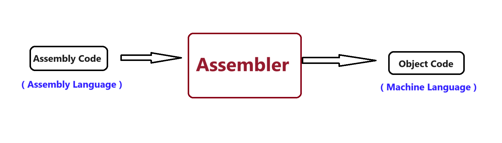
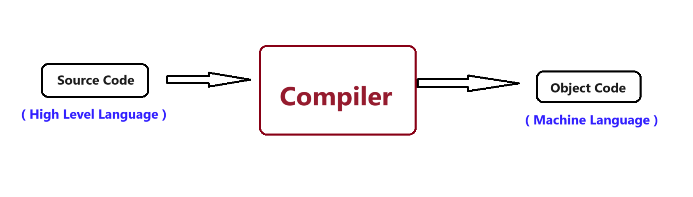
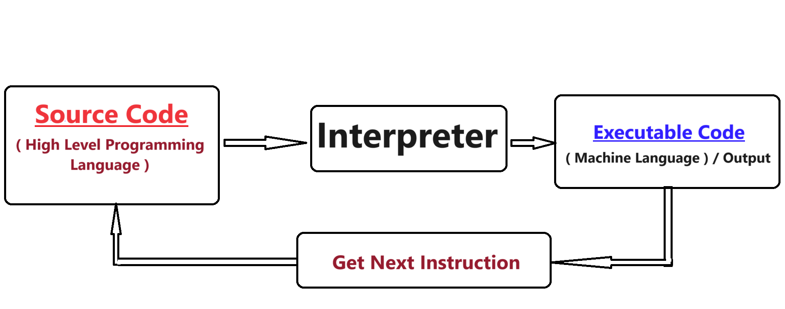
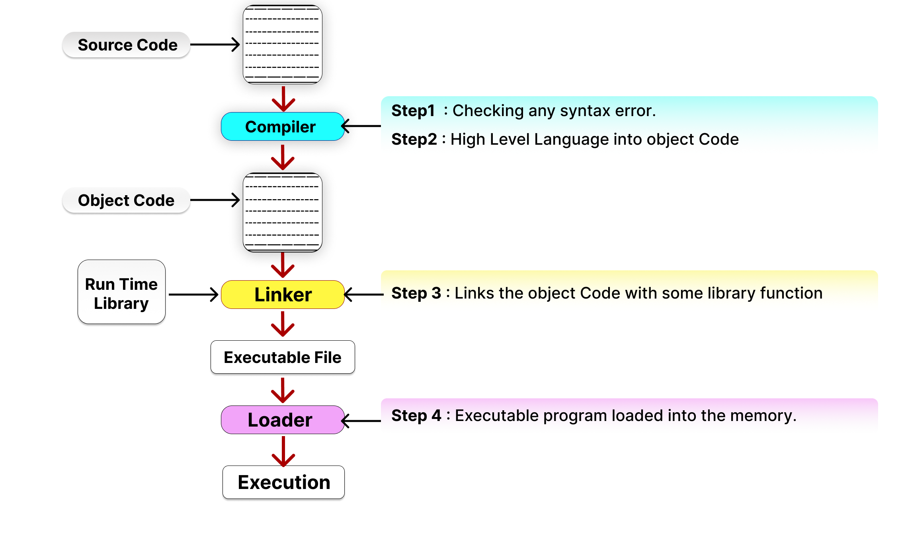

✬ Programming is the process of creating a set of instructions that tells a computer how to perform a task.
✬ Programming can be done by using a variety of computer programming language such as Java, Python, C++ etc.
✬ Programming language is the computer language that is used by programmers (developers) to design and write the computer programs to communicate with computer.
✬ A programming language is mainly used to develop desktop applications, web application and mobile application.
✬ A Low-Level language is machine-dependent (0's and 1's) programming language. It contains basic instructions readable only by the machine.
✬ Machine Language :
✬ Machine Language is a type of low-level programming language and named as first generation of programming language.
✬ Machine language is a collection of binary digits (0,1) or bits that the computer reads.
✬ It does not required any translator to convert the programs because computers directly understand the machine language programs.
Example :
H = 72 (01001000) and I = 73 (01001001)
HI= [01001000 01001001]
Advantage of Machine Level Language:
✬ It does not required any translator to translate the code.
✬ It takes very less time and very efficient to execute a program, because there is no translated take place.
✬ Machine level languages are directly interacting with computer system.
Disadvantage of Machine Level Language:
✬ Binary code is unreadable because it is too hard to understand and program.
✬ Debugging process is very hard because it is very difficult to finding error.
✬ It is a machine dependent language, due to the program design for one machine, the code is no use of other machine.
✬ Assembly Language :
✬ Assembly level language is also type of low-level programming language and named as second generation of programming language.
✬ It is designed for specific processors which means it directly communicate with computer's hardware.
✬ The problem which we are facing in machine level language are reduced in assembly level language by symbol which is Human understandable.
✬ The assembly language code is not portable because the data is stored in computer's register and computer has to know the different sets of registers.
Example : ADD for addition, SUB for subtraction, CMP for comparision etc. So it is easier to write and understand such symbols are also known as Mnemonics.
As we know that the computers can only understand the machine-level instructions, so we required translator that convert the assembly code into machine code.
The translator used for translating the assembly code is known as an assembler.
Advantage of Assembly Level Language:
✬ To develop a program it takes less time due to human understandable symbol are used.
✬ It allows complex jobs to run in simple way.
✬ Debugging process is easy due to easily find errors here, because it is use English keyboard (symbol) instead of binary digits.
Disadvantage of Assembly Level Language:
✬ It required translator to translate the code, so it is time consuming.
✬ Major disadvantage is program written for one computer might not run in other computer with different hardware configuration.
✬ It needs more size or memory of the computer to run the long program written in assembly language.
✬ High Level Language is the upper level language and also known as the third generation programming language.
✬ A high level language means general english language which is very near to human understanding.
✬ Those programs written in high level language must required software to translate the program into machine understandable code.
✬ The software is called compiler or/and interpreter, the main job of the software is to take source code of the program and convert that the code into machine code.
✬ Using high level programming language we can easily write program/code accurately and reduce the mistake in program.
✬ Some high level programming language are BASIC (Beginners' All-purpose Symbolic Instruction Code), FORTRAN (FORmula TRANslation), C++, Java, C Sharp (C#), Python, Visual Basic, Perl, Ruby, PHP and many more.
Advantage of High Level Language:
✬ Easy to understand, implement and well maintain because of human understandable language are used.
✬ Debugging process is very easy, here the programmers have time to think about overall logic rather than a thinking about a program code errors due to the use of compiler/interpreter can detected and located the error easily.
✬ It is machine independent the program written in high level language are portable and it can be execute on any type of computer with no modification at all.
Disadvantage of High Level Language:
✬ It takes additional translation time to translate the source code into machine code.
✬ It required converter (compiler and/or interpreter) to convert high level language into machine level language.
✬ Cannot communicate directly with hardware.
✬ Those programming language which supports features of both low level programming and high level programming language is called middle level language.
✬ This middle level programming language act as a bridge between hardware and software.
Example: C language.
✬ Programmer can use mid level programming language to do the system programming (for writing operating system like Unix) as well as application programming (for application software like Mozilla Firefox).
| Low Level Language | High Level Language |
|---|---|
| ✬ Low level programming language are machine dependent that means program written in a low level language are not portable. | ✬ High level programming languages are machine independent that means program written in high level language are portable. |
| ✬ Low level language are very close to the hardware. They help in writing various program at the hardware level, so it require the knowledge of computer hardware. | ✬ High level language do not provide various facilities at the hardware level so it does not require the knowledge of computer hardware. |
| ✬ These are machine-friendly language that are very difficult to understand by human being but easy to understand and translate by machine. | ✬ These are programmer-friendly language that are manageable easy to understand and debug. |
| ✬ Low level language are required an assembler for direct translating the instruction to the machine language. | ✬ High level language required the use of compiler and/or interpreter for their translation into the machine code. |
| ✬ Low level language are not very common nowadays for programming. | ✬ High level language are very common and widely used for programming in today's time. |
| ✬ Some example of low level language include the machine language and assembly language. | ✬ Some example of high level language include Perl, BASIC, COBOL (Common Business-Oriented Language), JAVA, PHP (Hypertext Preprocessor), Python etc |
✬ The assembler is used to translate the program written in assembly language into machine code the source program is an input of assembler that contains assembly language instruction the output of generating by assembler is object code or machine code which is understandable by the computer.
✬ The assembler is basically able to convert these Mnemonics in binary code. Here, these Mnemonics also depend upon the architecture of machine.
✬ For example the architecture of Intel 8085 and Intel 8086 are different.
✬ The language processor that reads the complete source program written in high level language as a whole in one, and it goes for translation which is in machine language.
✬ Example: C, C++, C# and Java.
✬ In compiler the source code is translated to object code successfully if it is free of error the compiler specify the error at the end of compilation with line numbers when they are found any error in source code.
✬ The translation of a single statement of the source program into machine code and execute immediately before moving onto the next line is called an interpreter.
✬ Example: Perl, Python and MATLAB (matrix laboratory)
✬ If there is an error in the statement, the interpreter terminates its translating process at that statement and display an error message the interpreter move on the next line for execution only, after the removal of the error.
✬ Source code: Source code refers to high level code which is generated by human/programmer by using any text editor. It is written any high level language like C, Java, Python etc.
✬ Object Code: Object code refers to low level code which is understandable by machine. It is written in machine language through compiler or assembler or any other translator. Object code contains a sequence of machine understandable instructions to which is CPU understand and executes.
✬ Byte Code: Bytecode is an intermediate code between the source code and machine code it is a low-level code that is the result of compilation of the source code it is a process by virtual machine the virtual machine convert the bytecode into specific machine instruction that computer processor will understand. The virtual machine converts that code into machine code using the interpreter, the virtual machine uses the interpreter at the runtime.
✬ Machine Code: Machine code is a set of instruction that is directly machine understandable and it is processed by CPU. The machine code is in binary (0's and 1's) format which is completely different from bytecode and source code. Machine code is obtained after the compilation or interpretation. It is also called a machine language.
✬ Compilation : Compilation is the phase or steps for execution where a program source code is converted into object code and then transferred for execution.
Step 1: In the first step of source code is check for any Syntax errors.
Step 2: After the syntax error are traced out, the source file is passed through a complier which first translate high level language into a object code ( A object code is not ready to executed).
Step 3: The Linker links the object code with pre-compiled library functions, thus creatiing an executable program.
Step 4: Then, the executable program is loaded into the memory for execution.
Linker: A linker is special program that combines the object files, generated by compiler/assembler and other pieces of code to originate an executable file has .exe extension.
Loader: It is special program that takes input of executable files from linker, loads it to main memory, and prepares this code for execution by computer.